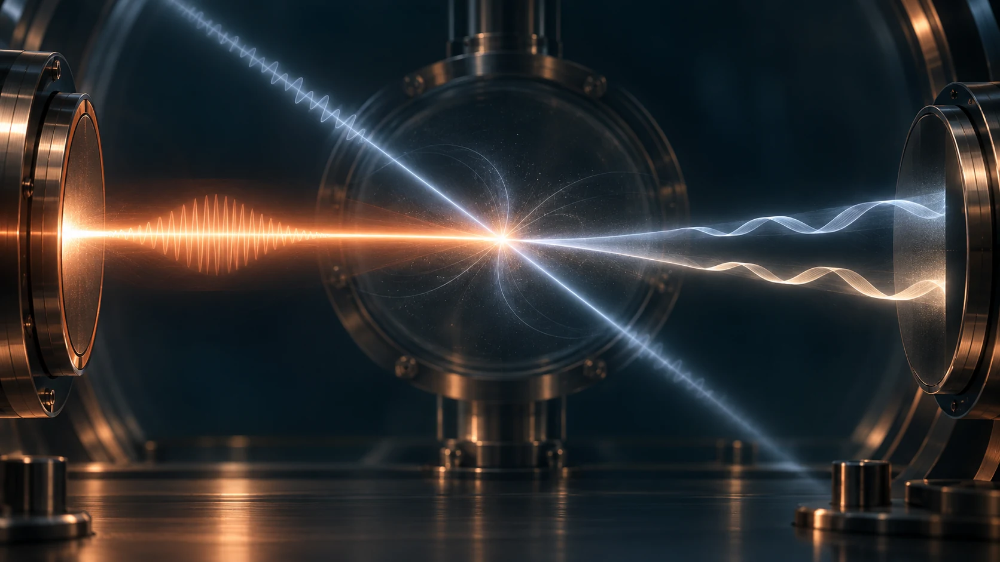
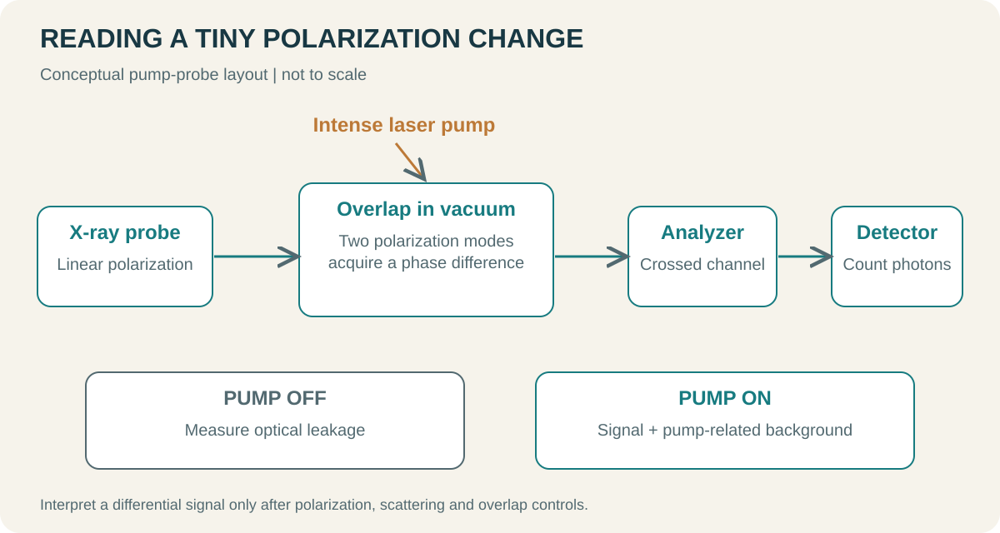
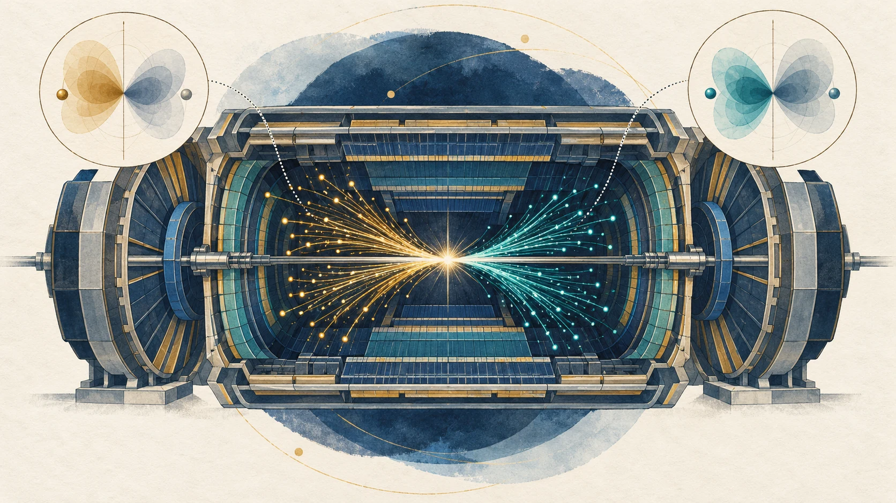
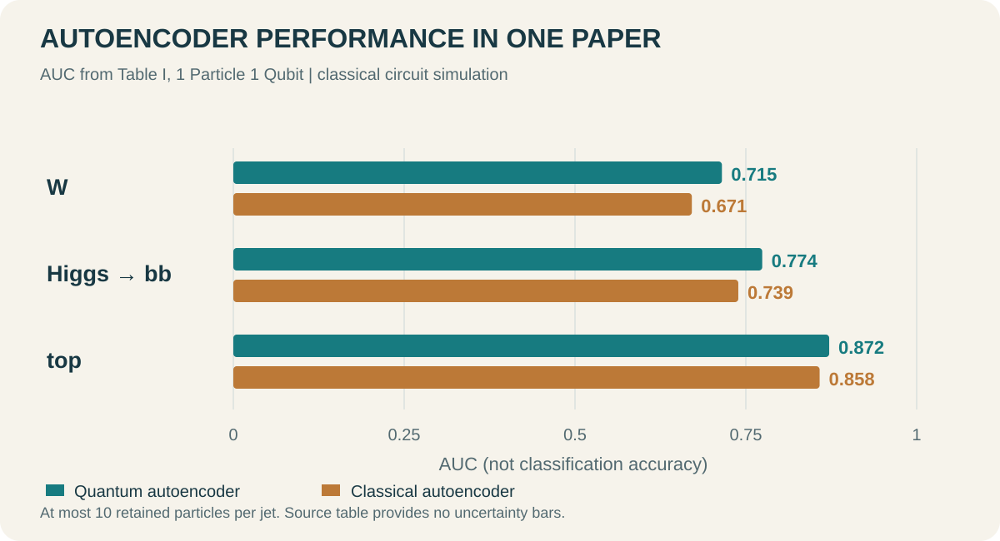
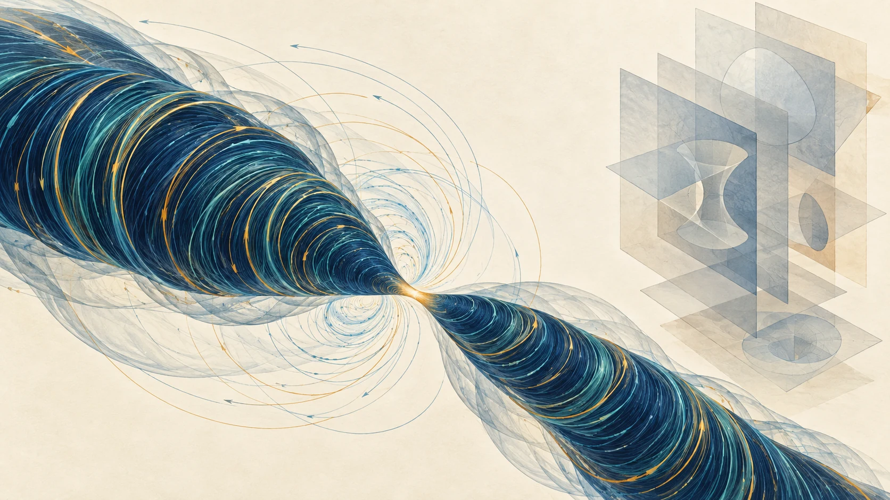
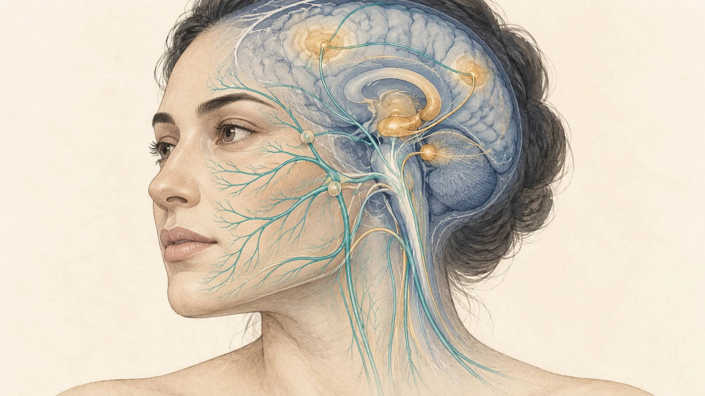

SCIENCE FRONTIERS · 2026.09.11
양자진공에서 AI 수학 증명과 기억 조절까지
강한 빛이 드러내는 진공, 충돌실험에 남은 양자정보, 유체 방정식의 특이점, 그리고 얼굴의 감각 신경과 기억. 네 주제를 원리와 실험의 언어로 읽습니다.

진공을 통과한 빛의 편광이 아주 조금 변한다면, 그 변화는 빈 공간의 성질을 말해 줄 수 있습니다. 충돌 뒤 사라진 입자의 스핀도 붕괴 산물의 방향에 흔적을 남깁니다. 유체의 전체 운동에너지가 유한해도 극히 작은 곳의 속도는 발산할 수 있는지, 얼굴에서 들어온 감각 신호가 새로운 기억을 만드는 과정에 영향을 줄 수 있는지도 같은 정도로 흥미로운 질문입니다. 우리가 직접 보기 어려운 대상을 어떤 관측량과 수학으로 이해하느냐는 문제이기 때문입니다.
이번 리뷰는 New Scientist Weekly에서 소개한 주제를 출발점으로 삼아, 관련 논문과 공식 자료를 따로 읽고 구성했습니다. 잡지 기사를 압축한 글이 아닙니다. 양자물리 두 장, AI와 수학 한 장, 뇌과학 한 장을 깊게 다루고 엘니뇨는 마지막에 짧게 덧붙였습니다.
근거 기준일은 2026년 9월 10일입니다. New Scientist 기사 전문에는 접근하지 못했습니다. 특히 얼굴 자극 기사의 신규 실험은 원 논문을 특정하지 못했으므로, 그 결과를 확인된 사실로 재현하지 않고 식별 가능한 선행 연구를 검토합니다. 양자진공·충돌실험 장에서도 아래 논문들을 해당 잡지 기사가 다룬 바로 그 연구라고 단정하지 않습니다.
01 / QUANTUM VACUUM진공은 빛에 어떻게 반응하는가
‘아무것도 없음’이라는 직관의 한계
전자기학을 처음 배울 때 진공은 빛이 통과하는 배경입니다. 선형적인 Maxwell 이론에서는 두 빛줄기가 만나도 각자의 파동을 그대로 더할 수 있습니다. 두 손전등을 교차시킨다고 빛끼리 부딪혀 튕겨 나가지 않는 이유를 이 수준에서 이해할 수 있습니다.
양자전기역학, 즉 QED(quantum electrodynamics)는 빛과 전자의 상호작용을 함께 다룹니다. 진공은 그 장들의 가장 낮은 에너지 상태입니다. 평균 전기장이 0이라는 것과 전기장의 양자적 요동이 없다는 것은 다른 진술입니다. 확률변수의 평균이 0이어도 분산이 0일 필요가 없는 것처럼, 장의 평균값만으로 진공의 성질을 모두 설명할 수 없습니다.
여기서 흔히 등장하는 ‘입자와 반입자가 잠깐 생겼다 사라진다’는 그림은 계산을 직관화한 표현입니다. 가상입자를 작은 공처럼 촬영한다는 뜻은 아닙니다. 실험은 들어간 빛과 나온 빛의 관계를 측정하고, 그 관계가 장의 양자적 상호작용에서 예측한 방식으로 변하는지 확인합니다. 진공을 ‘본다’는 말은 이처럼 진공의 반응을 관측한다는 의미로 읽는 것이 정확합니다.
강한 장이 만드는 아주 작은 광학적 비대칭
일반적인 유리에서는 전자들이 빛에 반응하면서 굴절률이 생깁니다. QED에서는 외부의 강한 전자기장 속 진공도 탐침 빛에 비선형 반응을 보일 수 있습니다. 탐침의 두 편광 방향이 서로 다른 위상속도를 얻으면, 처음에는 선편광이던 빛이 약한 타원편광으로 바뀝니다. 두 편광에 대한 굴절률 차이를 진공 복굴절이라고 부릅니다.
강한 펌프 빛으로 상호작용 영역을 만들고 약한 탐침 빛으로 그 반응을 읽는다고 생각하면 됩니다. 펌프는 조사 대상의 조건을 바꾸고, 탐침은 그 조건을 측정합니다. 물질의 펌프–탐침 분광과 닮았지만, 여기서는 원자나 분자를 넣지 않은 진공에서 효과를 찾는다는 점이 특별합니다. 이상적인 단일 평면 전자기파에서는 장의 두 불변량이 모두 0이므로, ‘레이저가 강하면 그 자체로 모든 효과가 생긴다’는 식의 설명도 부족합니다. 빔의 상대 방향·초점·시간 중첩을 함께 설계해야 합니다.

길이 L인 균일한 상호작용 영역에서 탐침의 보통 파장을 λ, 두 편광의 굴절률 차이를 Δn이라고 두면 다음 관계를 얻습니다.
입사 편광을 두 고유 편광축에 45°로 놓고, 원래 입사 편광을 차단하도록 분석기를 돌렸다고 합시다. 이상적인 경우 차단 방향으로 새어 나오는 광자의 비율은 다음과 같습니다.
이 관계는 왜 실험이 어려운지도 보여 줍니다. 작은 위상차가 다시 제곱되어 검출 확률에 들어갑니다. 탐침 광자를 많이 모으는 것만으로 충분하지 않고, 분석기의 누설광과 산란 배경을 더 낮추어야 합니다.
편광의 위상차를 바꾸어 보기
설명용 위상차 범위입니다. 실제 진공 효과의 크기를 나타내지 않습니다.
이 조작 예제는 위상차와 검출 확률의 관계를 보여 주는 이상적인 편광 광학 계산입니다. 표시 범위는 변화를 눈으로 읽도록 크게 잡았습니다. 실제 레이저 진공 실험의 효과 크기나 검출률을 예측하는 시뮬레이터가 아닙니다.
실험은 어디까지 왔는가
독립적으로 확인한 구체적인 사례는 BIREF@HIBEF 협력단의 2024년 실험 의향서입니다. European XFEL의 HED 장비에서 ReLaX 레이저와 X선 탐침을 결합하려는 제안입니다. 논문은 예시 조건에서 편광이 바뀐 광자 비율을 약 10⁻¹²로 추정합니다. 검출 보고가 아니라 설계와 민감도 전망입니다. 실제 성패는 극미량의 신호를 광학계의 누설 및 펌프 배경과 분리하는 데 달려 있습니다. [1]
강한 짧은 펄스 대신 긴 광학 경로를 이용할 수도 있습니다. 2025년 Spector 등의 연구는 자기 진공 복굴절 측정을 위한 간섭계 기법을 19 m 광학 공진기에서 시험했습니다. 이 시험에는 자기장이 없었습니다. 따라서 확인된 것은 측정 기법의 성능이지 진공 복굴절 그 자체가 아닙니다. [2]
| 접근 | 신호를 키우는 방법 | 먼저 확인해야 할 것 |
|---|---|---|
| 강한 레이저 + X선 탐침 | 높은 장 세기, 짧은 파장 | 두 펄스의 중첩과 편광 배경 |
| 자기장 + 광학 공진기 | 긴 유효 광학 경로 | 공진기·거울 잡음과 자기장 연동 신호 |
| 중이온 충돌의 광자–광자 산란 | 강한 전자기장이 제공하는 광자 상호작용 | 충돌 배경과 선택 조건 |
세 번째 접근에서는 이미 관측된 현상이 있습니다. ATLAS는 2019년 초주변 납–납 충돌에서 광자–광자 산란을 관측했다고 보고했습니다. 이는 양자적 비선형 전자기 상호작용의 실험적 근거지만, 실험실의 레이저 진공 복굴절을 처음 검출했다는 주장과는 구분됩니다. ‘진공의 첫 관측’이라는 제목을 읽을 때 어떤 관측량과 조건의 ‘처음’인지 물어야 하는 이유입니다. [3]
암흑물질과 연결되는 지점
새로운 가벼운 입자가 광자와 결합한다면, 정밀한 광학 신호가 QED 예측에서 벗어날 수 있다는 것이 새로운 물리 탐색의 기본 발상입니다. 하지만 예상과 다른 편광 회전이 나왔다고 곧바로 암흑물질을 발견한 것은 아닙니다. 잔류 기체, 거울의 복굴절, 빔의 기하학, 펌프에 동반되는 산란부터 설명해야 합니다. 이후 여러 파장·장 세기·방향에서의 의존성이 한 가지 물리 모형과 일관되는지 확인해야 합니다.
이 분야의 가치는 이상 신호가 있을 때만 생기지 않습니다. QED가 예측한 크기와 변화 양상을 처음으로 정밀하게 확인하는 것도 강한 장에서의 기본 이론을 시험하는 결과입니다. 반대로 아무 신호도 보이지 않았다면, 실험이 도달한 민감도 안에서 어떤 결합 세기나 모형을 제한했는지 제시할 수 있습니다.
양자컴퓨팅에 익숙한 독자는 여기서 양자의 다른 얼굴을 볼 수 있습니다. 계산에 쓰는 큐비트를 늘리는 연구가 아니라, 양자장론의 아주 작은 효과를 광학 측정으로 읽어 내는 연구입니다. 그 성과를 판단하는 단위도 회로 깊이나 게이트 충실도보다 위상 민감도·광자 수·배경 제어입니다.
02 / QUANTUM INFORMATION AT COLLIDERS충돌 뒤에도 남는 양자정보

검출기의 숫자는 양자성을 모두 지우는가
대형 강입자 충돌기, LHC(Large Hadron Collider)는 입자 충돌을 만들고 검출기는 위치·에너지·도달 시간 등을 기록합니다. 저장된 파일은 고전적인 숫자입니다. 그렇다고 그 숫자 안에 양자 현상에 관한 정보가 전혀 없다는 뜻은 아닙니다. 양자역학은 관측 결과들의 확률과 상관관계를 예측하는 이론이기도 하기 때문입니다.
간단한 예로 두 스핀의 상태를 생각할 수 있습니다. 각 입자의 평균 스핀만 따로 보면 특별한 방향성이 없어도, 두 입자를 함께 측정한 결과에는 강한 상관관계가 남을 수 있습니다. 개별 평균만 보관하는 분석은 그 정보를 놓칩니다. 관측 축을 달리한 결합 분포를 사용하면 더 많은 정보를 복원할 수 있습니다.
입자물리에서는 짧게 존재하고 붕괴하는 입자에 측정기를 돌려 가며 직접 접근하기 어렵습니다. 대신 붕괴 산물이 어느 방향으로 나오는지에 원래 입자의 스핀 정보가 반영된다는 점을 이용합니다. 탑 쿼크와 반탑 쿼크의 스핀 상태를 붕괴 각도에서 추정하는 양자 상태 토모그래피가 그 사례입니다. 토모그래피는 여러 방향의 관측으로 대상을 재구성한다는 뜻입니다. Afik과 Muñoz de Nova는 이 접근을 LHC에 적용하는 이론적 방법을 제시했습니다. [4]
두 스핀 1/2 계의 밀도행렬은 다음처럼 쓸 수 있습니다.
여기서 ρ는 상태의 확률적 정보를 담은 밀도행렬이고, σ는 세 방향의 Pauli 스핀 행렬입니다. B는 각 입자의 편극, C는 두 입자의 상관관계입니다. 식을 계산할 필요는 없습니다. 각 입자의 정보와 두 입자의 공동 정보가 따로 들어간다는 구조를 보면 됩니다. 실제 분석은 많은 사건의 각도 분포로 이 계수들을 추정합니다. 한 번의 충돌에서 모든 성분을 동시에 알아내는 절차는 아닙니다.
이미 관측된 얽힘과 아직 발견되지 않은 암흑물질
CMS는 2024년 탑–반탑 생성의 특정 문턱 영역에서 얽힘의 관측을 보고했습니다. 선택된 분석에서 얽힘 판정량 D는 −0.480, 불확실성은 +0.026/−0.029였고, 분리 가능한 상태의 경계는 −1/3입니다. 저자들이 보고한 유의도는 5.1σ입니다. 이 숫자는 그 위상공간과 분석 정의에 속하며, 모든 탑 쿼크 사건의 보편적인 얽힘 크기를 뜻하지 않습니다. [5]
또한 얽힘의 관측, Bell 부등식 위반, 새로운 입자의 발견은 서로 다른 결과입니다. 얽힘은 두 부분의 상태가 독립적인 상태들의 고전적 혼합으로 설명되지 않는다는 뜻입니다. Bell 검정은 측정 선택과 상관관계에 더 강한 조건을 요구합니다. 2026년 탑 쿼크 상관관계 연구도 여러 양자 상관성의 계층을 분석하면서 조사한 영역에서 Bell 상관관계는 관측되지 않았다고 구분했습니다. [6]
암흑물질을 찾는 경우에도 비슷한 주의가 필요합니다. 검출기 밖으로 빠져나간 보이지 않는 입자는 가시 입자들의 횡운동량 합에 불균형을 남길 수 있습니다. 그러나 중성미자나 검출기 오차도 비슷한 효과를 만듭니다. 스핀과 각도 상관관계를 더 잘 활용하면 가설을 구별하는 추가 단서를 얻을 수 있지만, 얽힘 자체가 암흑물질의 지문인 것은 아닙니다.
같은 ‘양자’라는 말 아래 있는 두 연구
여기서 양자컴퓨터를 도입하면 이야기가 쉽게 섞입니다. 하나는 충돌에서 생성된 양자 상태의 상관관계를 고전 데이터로 추론하는 일입니다. 다른 하나는 고전적으로 저장된 사건 특징을 큐비트에 인코딩해 분석하는 일입니다. 후자는 양자기계학습, QML(quantum machine learning)에 해당합니다.

Sarah Malik 등이 참여한 2024년 양자 오토인코더 연구는 표준모형을 벗어나는 사건을 비지도 방식으로 찾아보려는 두 번째 접근의 사례입니다. 정상 배경의 특징을 압축하는 모형을 학습하고, 압축이나 복원이 잘되지 않는 사건에 높은 이상 점수를 주는 방식입니다. 논문은 새로운 회로 설계와 비교 결과를 제시하지만, 이것을 실제 새 입자 발견으로 읽을 수는 없습니다. [7]
보다 구체적으로 살펴볼 수 있는 별도 사례는 2025년 ‘1 Particle 1 Qubit’ 연구입니다. 제트는 한 방향으로 묶여 나타나는 입자들의 집합입니다. 연구진은 입자 운동학의 일부를 회전각으로 바꾸어 입자 하나를 큐비트 하나에 대응시켰습니다. 여기서 양자 회로의 얽힘은 데이터를 인코딩한 뒤 새로 만드는 계산 자원입니다. 원래 충돌의 완전한 양자 상태를 검출기에서 양자 메모리로 옮긴 것이 아닙니다. [8]

AUC는 수신자 조작 특성 곡선 아래 면적입니다. 여러 이상 점수 문턱을 움직였을 때 신호와 배경을 얼마나 잘 순서화하는지 요약합니다. 0.872라는 값은 발견 확률 87.2%나 사건 분류 정확도 87.2%를 뜻하지 않습니다. 실제 검색에서는 배경이 훨씬 많은 조건에서 오탐률을 얼마나 낮출 수 있는지, 관심 신호에 얼마나 민감한지도 봐야 합니다.
이 연구의 회로 실험은 고전 시뮬레이터에서 수행됐고 제트당 가장 강한 입자 최대 10개를 사용했습니다. 학습 매개변수가 적다는 장점은 전체 실행시간의 양자 우위와 같지 않습니다. 입력 인코딩, 반복 측정, 최적화, 잡음, 강한 고전 비교 모형까지 포함해야 실용성을 판단할 수 있습니다. [8]
다음 실험에서 보고 싶은 것
유망한 후속 방향은 ‘양자라는 이름이 붙은 모형이 이겼는가’보다 어떤 물리 정보를 더 잘 이용했는지 밝히는 것입니다. 같은 입자 수와 입력 변수를 쓰고, 스핀에 민감한 특징을 넣었을 때 이득이 어디서 생기는지 분해할 수 있습니다. 배경 생성기의 선택을 바꾸거나 실제 검출기 조건을 반영했을 때 성능이 유지되는지도 중요합니다.
양자 상태 토모그래피에서는 관측하지 않은 자유도를 합쳐 버리는 과정, 검출기 수용도, 배경 제거가 밀도행렬 추정에 어떤 편향을 주는지 확인해야 합니다. QML에서는 회로 구조보다 데이터 선택이 성능 차이를 만들지는 않았는지 물어야 합니다. 두 연구는 서로 도움을 줄 수 있지만, 지금 확보한 증거가 어느 쪽에 속하는지부터 분명히 해야 합니다.
03 / AI & MATHEMATICSAI의 Navier–Stokes 증명은 무엇을 뜻하나

커피 속 소용돌이에서 존재성 문제로
컵을 저으면 큰 흐름 안에 작은 소용돌이가 생기고, 시간이 지나면 점성에 의해 잦아듭니다. Navier–Stokes 방정식은 유체가 스스로를 운반하는 효과, 압력, 점성, 외력을 함께 기술합니다. 비압축성 조건에서는 유체 요소의 부피가 변하지 않도록 속도장의 발산이 0이어야 합니다.
밀도를 일정하게 두고 압력을 밀도로 나눈 변수로 쓰면, 기본 방정식은 다음과 같습니다.
u는 위치와 시간에 따른 속도, p는 압력 변수, ν는 동점성계수, f는 단위 질량당 외력입니다. 왼쪽의 비선형 항은 흐름이 자기 자신을 옮기는 효과입니다. 오른쪽의 점성 항은 작은 공간 규모의 급격한 변화를 완화합니다. 밀레니엄 문제의 어려움은 매끈한 초기조건에서 출발해도 이 경쟁이 모든 시간 동안 매끈한 해를 보장하는지에 있습니다.
컴퓨터의 유체 시뮬레이션은 공간과 시간을 잘게 나눕니다. 따라서 계산 격자보다 더 작은 규모에서 무엇이 일어나는지 직접 보장하지 못합니다. 점점 촘촘한 격자에서 최대 속도가 커진다는 사실만으로 수학적 발산을 증명할 수도 없습니다. 발산은 무한히 작은 규모까지 이어지는 명제인 반면, 시뮬레이션은 유한한 해상도를 갖기 때문입니다.
9월 발표에서 실제로 주장한 정리
OpenAI는 2026년 9월 8일 논문과 Lean 형식화 자료를 공개했습니다. 논문 정리 1.1은 임의의 양의 점성계수에 대해, 정지 상태에서 출발하고 매끈한 외력을 받는 3차원 비압축성 유체의 속도가 유한시간에 발산하는 구성을 주장합니다. 공간 전체에서 적분한 운동에너지는 그 시간 이전에 균일하게 유한하지만 최대 속도는 무한대로 커집니다. 논문은 공간 전체와 주기적 공간의 경우를 다룹니다. [9]
이를 간단히 쓰면 다음 두 조건의 공존입니다. 논문은 발산 시각을 t = 1로 정규화합니다.
첫 번째는 속도 제곱을 공간에 적분한 양이 폭주하지 않는다는 뜻입니다. 두 번째는 어느 작은 영역의 최고 속도는 한없이 커질 수 있다는 뜻입니다. 논문에서 외력은 매끈하고 공간·시간에서 콤팩트한 지지를 갖습니다. 따라서 거친 힘이나 무한대의 힘을 손으로 넣어 속도를 발산시키는 단순한 예제를 제시한 것이 아닙니다. [9]
여기서 외력이 있다는 점은 결과를 읽는 데 필수입니다. Clay Mathematics Institute의 공식 문제에는 외력이 없는 해의 전역 매끈함을 증명하는 선택지와, 허용되는 매끈한 외력 아래에서 붕괴를 구성하는 선택지가 함께 있습니다. 후자는 공식 진술의 C·D 경로입니다. 따라서 ‘외력이 있으니 밀레니엄 문제와 무관하다’는 평가는 맞지 않습니다. 동시에 이 결과에서 외력을 0으로 바꾸어 같은 결론을 얻을 수 있다고 말해서도 안 됩니다. [10]
| 질문 | 이 발표와의 관계 |
|---|---|
| 매끈한 외력 아래에서 유한시간 발산이 가능한가 | 공개 논문이 주장하는 핵심 결과 |
| 외력이 없는 3차원 Navier–Stokes 해도 발산하는가 | 이 결과만으로 결론낼 수 없음 |
| 모든 난류의 구체적 흐름을 예측할 수 있게 됐는가 | 존재성·매끈함 문제와 다른 과제 |
| 실제 물이 무한한 속도로 움직인다는 뜻인가 | 연속체 방정식의 수학적 해에 관한 주장 |
| Clay 상의 최종 인정까지 완료됐는가 | 근거 기준일에 확인되지 않음 |
에너지가 유한한데 속도가 무한할 수 있는 이유
이 대목은 직관을 바꾸는 데 도움이 됩니다. 전체 에너지는 공간에 퍼진 속도 제곱의 합입니다. 좁은 곳에서 속도가 커져도 그 영역의 부피가 더 빠르게 줄면 전체 합은 유한할 수 있습니다.
길이 규모를 ε라고 하고, 그 안에서 대표 속도가 ε⁻ᵃ처럼 커진다고 합시다. 3차원 영역의 부피는 ε³에 비례하므로, 그 영역의 에너지 규모는 ε³⁻²ᵃ입니다. 예를 들어 a = 1이면 최대 속도 규모는 ε⁻¹로 커지지만 국소 에너지는 ε처럼 줄어듭니다.

물론 이것만으로는 증명이 되지 않습니다. 아무렇게나 가늘고 빠른 속도장을 만들면 비압축성 조건을 어기거나, 그 흐름을 유지하는 데 필요한 외력이 매끈하지 않을 수 있습니다. 압력도 속도와 일관되어야 합니다. 실제 수학적 작업은 국소 집중을 만드는 모든 단계가 하나의 방정식과 정칙성 조건을 동시에 만족하도록 구성하는 데 있습니다.
회전의 세기를 나타내는 와도 ω = ∇ × u로 생각하면 경쟁이 더 선명해집니다.
오른쪽 첫 항은 3차원 소용돌이의 늘어남과 방향 변화를 포함합니다. 점성은 작은 규모의 변화를 완화합니다. 스케일 설명은 왜 속도의 집중과 에너지의 유한성이 논리적으로 양립할 수 있는지를 보여 줄 뿐, 이 항들이 정확하게 균형을 이루는 구성까지 대신하지는 못합니다.
AI가 한 일과 검증기가 한 일
공식 발표에 따르면 연구에는 공개 모델보다 더 강력한 내부 모델과 다수의 에이전트가 사용됐습니다. Navier–Stokes 단계에서 약 1만 개 동시 에이전트, 88시간의 탐색, 이후 17시간의 형식화·검증을 보고했습니다. 이 수치는 발표 주체의 실행 보고이며, 이 리뷰에서 로그나 비용을 독립 감사한 값은 아닙니다. 여러 시도 전체의 토큰 수와 이 문제에만 사용한 토큰 수를 섞어 비용을 환산하지도 않았습니다. [11]
수학에서 생성 모형과 형식 검증기는 역할이 다릅니다. 생성 모형은 정의를 바꾸어 보고, 보조정리를 제안하고, 실패한 논증을 수정합니다. 검증기는 주어진 형식 체계와 공리 아래에서 그 증명 항이 정확한지 확인합니다. 틀린 아이디어를 많이 만들더라도 올바른 후보를 엄격히 가려낼 수 있다면 탐색의 폭은 넓어질 수 있습니다. 하지만 목표 명제를 잘못 형식화했다면 완벽하게 검사된 다른 정리를 얻는 데 그칠 수 있습니다.

공개 저장소에는 Lean 코드와 별도의 명제 비교·검증 절차가 포함되어 있습니다. 검증 가능한 파일과 고정된 버전이 남는다는 점은 보도자료만 있는 주장보다 독립 점검의 출발점을 훨씬 구체적으로 만듭니다. 다만 이 리뷰에서는 저장소 안내와 진입 파일을 확인했으며, 전체 Lean 빌드와 독립 검증기를 실행하지 않았습니다. 따라서 ‘직접 증명을 검증했다’고 표현하지 않습니다. [12]
기계가 증명을 받아들였다고 해서 사람이 그 증명을 이해할 필요가 사라지는 것도 아닙니다. 어떤 구조가 발산을 가능하게 했는지 알아야 결과를 다른 방정식에 확장할 수 있습니다. 정리의 결론만 갖고는 새로운 추정법이나 더 단순한 증명을 얻기 어렵습니다. 수학적 이해는 후속 연구를 위한 정보입니다.
선행 연구의 공로와 발표의 책임
이 결과는 오래된 유체방정식 연구와 이어집니다. Córdoba와 Martínez-Zoroa는 거친 외력을 허용하는 3차원 Euler 방정식의 발산 구성을 연구했습니다. Euler는 점성 항이 없는 방정식이므로, 그 결과를 점성이 있는 Navier–Stokes의 결과와 동일시할 수 없습니다. 그래도 힘의 정칙성을 높이고 다른 소산 조건으로 확장하는 연구 방향의 선행 맥락입니다. [13]
Tristan Buckmaster는 본인의 공개 성명에서 Levent Alpöge와의 연구가 이 선행 프로그램을 토대로 LLM의 도움을 받아 매끈한 외력의 Euler 결과로 나아갔다고 설명했습니다. 발표 경위와 공로 표시에 이의를 제기하면서도, 자신의 자료가 학습에 사용됐는지는 모른다고 명시했습니다. OpenAI는 비공개 연구를 열람하지 않았다고 설명하고, 비식별 사용 데이터가 훈련에 기여했을 가능성은 배제하지 못한다고 밝혔습니다. 두 입장은 구분해서 읽어야 하며, 공개 자료만으로 데이터 사용 여부나 부정행위를 확정할 수 없습니다. [14] [11]
이 논쟁은 증명의 참·거짓과 완전히 같은 질문이 아닙니다. 정리가 참이어도 연구의 출처와 기여 설명이 부정확할 수 있고, 발표 과정에 문제가 제기됐다고 정리가 자동으로 거짓이 되는 것도 아닙니다. 기술 리뷰는 수학 명제, 실행 보고, 공로와 데이터 사용에 대한 당사자의 진술을 한 덩어리로 평가하지 않아야 합니다.
Clay의 문제 페이지는 기준일에 여전히 ‘Active’로 표시되어 있었습니다. 상의 심사에는 적격 출판물 발표 이후 최소 2년과 수학계의 일반적 수용 등의 조건이 있습니다. 따라서 지금 가장 정확한 표현은 공식 문제의 허용 경로에 해당하는 중대한 해결 주장이 논문과 형식화 자료로 공개됐다는 것입니다. 수상 절차가 완료됐다는 표현은 시기상조입니다. [15] [16]
AI 연구 자동화에 주는 실용적인 함의
이번 사례에서 다른 연구 분야로 가져갈 수 있는 것은 에이전트 수 하나가 아닙니다. 결과를 검사할 수 있는 형태로 외부에 남기는 연구 설계입니다. 재료과학이라면 결정 구조·입력 조건·수렴 기준·에너지 계산이, 실험이라면 교정 기록·원시 신호·분석 코드가 이에 해당할 수 있습니다. 수학의 검증기만큼 강한 판정기가 없는 분야에서는 각 결과를 어느 수준까지 확인했는지 더 세밀하게 적어야 합니다.
또한 총 계산비용을 보고하려면 성공한 마지막 실행뿐 아니라 실패한 후보, 재시작, 도구 호출, 사람의 선택도 포함해야 합니다. 대규모 탐색이 유효한 문제와, 실험 비용 때문에 후보를 엄격하게 줄여야 하는 문제는 다릅니다. 향후 독립 검증이 진행되면 증명 자체의 안정성과 함께 어떤 작업 분해가 효과적이었는지도 연구할 가치가 있습니다.
04 / BRAIN & MEMORY감각 신경을 자극하면 기억이 달라질까

뉴스레터가 소개한 ‘얼굴 자극과 기억력’ 신규 실험의 논문은 확인하지 못했습니다. 아래 결과는 명시한 2024·2025년 연구에 한정합니다. 해당 기사 실험의 표본 수·효과 크기·지속시간을 추정해서 채우지 않았습니다.
얼굴의 전기 자극이 왜 기억과 연결되는가
얼굴의 감각은 뇌와 떨어져 있는 부수적 입력이 아닙니다. 감각 신경은 접촉·통증·온도 등의 정보를 뇌간으로 전달하고, 뇌는 그 입력을 현재의 주의와 각성 상태에 통합합니다. 삼차신경은 얼굴 감각의 주요 통로입니다. 일반어로 ‘얼굴의 신경’이라고 부르는 것과 해부학적 안면신경은 같지 않습니다. 어떤 신경을 자극했는지 확인하지 않은 채 두 이름을 바꾸어 쓰면 연구의 표적이 달라집니다.
경피적 삼차신경 자극, TNS(trigeminal nerve stimulation)는 피부를 통해 말초 신경에 전기 입력을 주는 접근입니다. 흔히 제안되는 기전은 뇌간의 감각 경로와 청반핵(LC, locus coeruleus)의 노르아드레날린성 조절을 거쳐 주의·학습에 영향을 미친다는 것입니다. 그러나 이 연결이 생리학적으로 가능하다는 것과, 특정 실험에서 그 경로를 통해 기억 점수가 올라갔음을 보였다는 것은 다른 수준의 설명입니다. [17]
노르아드레날린을 단순한 ‘기억력 증강 물질’로 이해하는 것도 부족합니다. 각성은 새로운 정보를 받아들이는 데 도움이 되지만, 지나친 각성은 집중을 흐트러뜨릴 수 있습니다. 같은 자극도 과제 수행 전인지 도중인지, 참가자의 상태와 과제 요구가 어떤지에 따라 효과가 달라질 여지가 있습니다. 그래서 자극의 존재뿐 아니라 언제, 누구에게, 어떤 학습 중에 주어졌는지가 중요합니다.

‘뉴런의 소통’과 ‘기억력’ 사이에는 여러 단계가 있다
기억을 적어도 세 단계로 나누어 생각하면 결과를 해석하기 쉬워집니다. 부호화는 새로운 정보를 받아들이고 구분하는 과정입니다. 공고화는 시간이 지나도 유지되도록 기억이 안정되는 과정입니다. 인출은 필요할 때 저장된 정보를 다시 꺼내는 과정입니다. 학습 순간의 주의력이 좋아져 더 많은 단어를 익혔다면 일주일 뒤 기억한 단어 수도 많을 수 있습니다. 이것만으로 망각 속도가 줄었다고 결론낼 수는 없습니다.
‘뇌 신호가 강해졌다’는 말에도 측정 방법이 필요합니다. 유발 반응의 진폭이 커진 것인지, 특정 주파수의 뇌파가 변한 것인지, 두 영역의 신호가 더 함께 움직인 것인지가 다릅니다. 두 신호의 상관성이 증가했다고 직접적인 시냅스 연결이 강해졌다고 단정할 수 없습니다. 공통 입력이나 각성 변화가 두 신호에 함께 영향을 줄 수도 있습니다.
시냅스 가소성은 활동에 따라 연결의 효율이 바뀌는 성질입니다. 하지만 모든 연결을 무조건 강하게 하는 것이 좋은 학습 전략은 아닙니다. 필요한 정보의 구분, 불필요한 반응의 억제, 적절한 타이밍도 중요합니다. 그러므로 ‘신호 증가 → 가소성 증가 → 기억 회복’이라는 연쇄를 한 번의 결과로 완성해서는 안 됩니다.
| 측정한 것 | 직접 말할 수 있는 것 | 추가 증거가 필요한 것 |
|---|---|---|
| 유발 전기 반응·뇌파 변화 | 해당 기록 조건의 신경 반응 변화 | 특정 시냅스의 지속적 강화 |
| 동공·침의 생체표지자 변화 | 각성·신경조절과 연관된 간접 지표 | 청반핵의 직접 활성 측정 |
| 즉시 단어 학습 성적 | 그 과제에서의 학습 수행 | 장기 공고화·일상 기억 전반 |
| 지연 회상과 망각률 | 시간에 따른 기억 유지 | 다른 과제·집단으로의 전이 |
긍정 결과만 읽으면 놓치는 2024년 실험
Arias와 Buneo의 연구는 건강한 젊은 성인을 대상으로 시각–운동 학습을 살폈습니다. 과제 전에 자극한 실험에 63명, 과제 중 자극한 별도 실험에 63명이 참여했습니다. 과제 전 60 Hz 조건은 위약 자극과 120 Hz 조건보다 학습이 느렸고, 과제 중 자극에서는 집단 간 유의한 차이가 없었습니다. 연구는 행동을 측정했으며 청반핵 기전을 직접 확인하지 않았습니다. [17]
이 결과에서 ‘120 Hz가 기억력을 높였다’고 말하면 비교를 잘못 읽은 것입니다. 더 낮은 성적을 보인 조건보다 나았다는 것과 위약보다 좋았다는 것은 같지 않습니다. 더구나 시각–운동 적응은 단어 기억이나 일상 사건 기억과 동일한 과제가 아닙니다.
부정적·중립적 결과도 기전을 이해하는 데 유용합니다. 자극 시점이나 빈도에 따라 학습이 달라진다면, 단순히 감각 입력을 늘리는 것 이상의 상태 의존성이 있다는 뜻일 수 있습니다. 다만 그 원인이 노르아드레날린인지, 불편감과 주의 분산인지, 다른 생리 과정인지는 별도의 실험으로 분리해야 합니다. 이 해석은 후속 가설이지 위 실험이 확정한 기전이 아닙니다.
기억 성적을 다룬 2025년 연구와 신경 표적의 차이
Arulchelvan과 Vanneste의 연구는 두 이중맹검 실험의 총 60명에서 대후두신경의 경피적 전기 자극과 단어쌍 학습을 검토했습니다. 초록은 자극 조건에서 학습과 지연 기억 성적이 좋아졌지만 공고화 차이는 유의하지 않았다고 보고합니다. 뇌파와 침의 alpha-amylase도 함께 측정했습니다. 이 리뷰는 해당 논문의 초록 수준에서 결과를 확인했습니다. [18]
대후두신경은 삼차신경이나 안면신경이 아닙니다. 이 논문을 ‘얼굴 자극의 효과를 입증한 연구’로 바꿔 소개하면 안 됩니다. 여기서 가져올 수 있는 것은 말초 신경 입력과 기억을 함께 연구하는 실험 설계입니다. 특히 공고화 차이가 없다는 관찰은 더 많은 정보를 처음 학습한 효과와 저장의 안정성 향상을 분리해야 한다는 점을 보여 줍니다. 침의 지표 역시 뇌 안의 노르아드레날린을 직접 측정한 값은 아닙니다.
| 연구 | 실제 표적·과제 | 결과의 경계 |
|---|---|---|
| Arias & Buneo, 2024 [17] | 삼차신경 · 시각–운동 학습 | 60 Hz 사전 자극에서 학습 저하, 동시 자극의 유의한 집단 차이 없음 |
| Arulchelvan & Vanneste, 2025 [18] | 대후두신경 · 단어쌍의 일화기억 | 학습·지연 기억 개선 보고, 공고화 차이는 유의하지 않음; 초록 확인 |
| 뉴스레터의 신규 얼굴 자극 기사 | 표적·설계의 원 논문 미확인 | 위 두 연구와 동일시하지 않음 |
다음 논문에서 어떤 그림을 봐야 할까
기억 연구의 좋은 결과 그림에는 평균 점수만 아니라 참가자 분포, 오차 범위, 사전에 정한 주평가지표가 필요합니다. 같은 참가자의 학습 직후 성적과 지연 성적을 함께 보면 처음에 더 배운 것인지 더 오래 유지한 것인지 구분하는 데 도움이 됩니다. 다른 과제로 옮겼을 때도 이득이 있는지는 일상적 의미를 판단하는 데 중요합니다.
대조 조건도 결정적입니다. 피부 감각이 뚜렷한 실험에서는 참가자가 자신의 자극 조건을 알아맞힐 수 있습니다. 위약 조건과 감각을 얼마나 맞췄는지, 실제로 눈가림이 유지됐는지 확인해야 합니다. 효과가 난 뒤 설명하기 쉬운 뇌 영역을 골라 연결하는 대신, 기전 지표와 행동 지표의 관계를 미리 정해 검정하는 설계가 더 설득력 있습니다.
임상으로의 확장은 별도의 단계입니다. 건강한 성인의 특정 과제에서 얻은 짧은 효과를 뇌손상, 소아, 의식 회복이나 치매 치료 효과로 일반화할 수 없습니다. 이 장은 연구의 해석을 위한 글이며 자가 자극의 위치·강도·사용법을 제안하지 않습니다.
현재 흥미로운 가능성은 ‘얼굴을 자극하면 기억이 좋아진다’는 단일 처방보다, 말초 감각 입력을 이용해 학습이 일어나는 뇌의 상태를 조절할 수 있는가라는 질문에 있습니다. 그 가능성을 좁혀 가려면 신경 표적, 과제, 자극 시점, 기억의 단계가 함께 맞아야 합니다.
05 / CLIMATE NOTE짧게 읽는 엘니뇨와 아마존

엘니뇨는 적도 태평양의 바닷물만 따뜻해지는 사건이 아닙니다. 바다와 대기의 결합 상태가 바뀌면서 대류와 강수의 위치가 이동하고, 그 영향이 먼 지역의 건조 위험에도 전달됩니다. 아마존에서는 강수 감소에 고온, 토지 이용, 숲의 훼손이 겹칠 때 피해가 커질 수 있습니다.
NOAA 기후예측센터의 2026년 9월 10일 진단은 2026–27년 북반구 가을·겨울에 매우 강한 엘니뇨가 될 확률을 90% 초과로 제시했습니다. 8월 Niño-3.4 해수면 온도 편차는 +1.8°C였습니다. 전자는 미래의 강도 확률, 후자는 관측된 특정 해역의 월별 편차입니다. 서로 다른 지표를 한 줄의 확정 예측처럼 합치면 안 됩니다. [19]
MAAP의 아마존 분석은 최근 벌채지에서 시작한 불이 건조한 주변 숲으로 번지는 경로를 강조합니다. 가뭄이 불을 저절로 만든다고 단순화하기보다, 건조한 연료와 사람에 의한 점화가 만나는 상황으로 이해해야 합니다. 이 분석은 역사적 비교의 표본이 작고 북대서양 해수면 온도 효과를 따로 반영하지 않았다는 한계도 명시합니다. [20]
따라서 ‘슈퍼 엘니뇨’라는 표현보다 강수·토양 수분·하천 수위·산불 감시가 각 지역에서 어떻게 변하는지가 중요합니다. 매우 강한 사건의 높은 확률은 준비를 강화할 근거지만, 아마존 전역에서 같은 가뭄이 확정됐다는 뜻은 아닙니다.
원문, 검토 범위, 이어서 물을 질문
이 네 분야는 모두 흥미로운 신호를 해석하는 과정에 있습니다. 진공에서는 배경광, 입자물리에서는 상태 추정과 분석 모형, 수학에서는 정확한 명제와 형식화, 뇌과학에서는 행동과 기전의 구분이 중요합니다. 이 구분을 따라가면 다음에 무엇을 측정하고 검토해야 하는지 더 구체적으로 알 수 있습니다.
세미나에서 이어서 다룰 만한 질문은 다음과 같습니다.
- 진공 실험: 관측 신호의 펌프 세기·편광·시간 지연 의존성이 QED 예측과 함께 맞는가? 한 가지 배경 원인을 바꾸어도 결론이 유지되는가?
- 충돌과 양자정보: 더 나은 분류가 스핀 상관관계에서 나온 것인지, 입력 특징과 비교 모형 선택에서 나온 것인지 분리할 수 있는가?
- AI 수학: 원래 문제와 Lean 명제의 대응, 전체 검증 재실행, 사람이 읽을 수 있는 핵심 구성은 각각 누가 확인했는가?
- 기억 연구: 학습 직후 성적을 맞춘 뒤에도 지연 기억에 차이가 있는가? 기전 지표를 직접 측정했는가, 간접적으로 추정했는가?
후속으로 살펴볼 연구자는 충돌의 양자정보와 QML을 연구하는 Sarah Malik, 유체방정식 발산 연구의 맥락을 제공하는 Tristan Buckmaster, 말초 신경 자극과 기억을 연구하는 Sven Vanneste입니다. 이름의 권위로 결론을 대신하기보다 각 논문의 표적과 비교 조건을 따라 읽는 편이 유익합니다.
- BIREF@HIBEF Collaboration (2024). Towards a Vacuum Birefringence Experiment at HIBEF.Proposal / full text
- Spector, Kozlowski & Roberts (2025). Demonstration of an interferometric technique for measuring vacuum magnetic birefringence with an optical cavity.Abstract; prototype without magnetic field
- ATLAS Collaboration (2019). Observation of light-by-light scattering in ultraperipheral Pb+Pb collisions.Published primary experiment / abstract
- Afik & Muñoz de Nova (2020). Entanglement and quantum tomography with top quarks at the LHC.Primary theoretical study / abstract
- CMS Collaboration (2024). Observation of quantum entanglement in top quark pair production in proton-proton collisions at √s = 13 TeV.Primary experimental paper / abstract
- Afik et al. (2026). Experimental characterization of the hierarchy of quantum correlations in top quark pairs.Primary research / abstract
- Duffy et al. (2024). Unsupervised Beyond-Standard-Model Event Discovery at the LHC with a Novel Quantum Autoencoder.Primary QML proposal / abstract
- Bal et al. (2025). 1 Particle – 1 Qubit: Particle Physics Data Encoding for Quantum Machine Learning.Full text, simulation setting and Table I
- OpenAI (2026). Finite Time Blowup for Navier–Stokes.Paper: statement and selected introductory sections; not a full proof audit
- Fefferman / Clay Mathematics Institute. Existence and Smoothness of the Navier–Stokes Equation.Official problem statement
- OpenAI (8 September 2026). Navier–Stokes announcement and research account.First-party claims; execution not independently audited
- OpenAI. NavierStokesAndEuler, commit f9e8bc5b38b6e212696e8a30e3e91517af887bbd.Documentation and entry-file inspection; no Lean build
- Córdoba & Martínez-Zoroa (2023). Blow-up for the incompressible 3D Euler equations with uniform C^(1,1/2−ε) ∩ L² force.Primary predecessor / abstract
- Tristan Buckmaster (September 2026). Public statement on the research and announcement.First-person statement; contested matters attributed
- Clay Mathematics Institute. Navier–Stokes Equation.Status checked 10 September 2026
- Clay Mathematics Institute. Rules for the Millennium Prizes.Official award conditions
- Arias & Buneo (2024). Effects of online and offline trigeminal nerve stimulation on visuomotor learning.Full text; behavioral endpoints and null/adverse results
- Arulchelvan & Vanneste (2025). Transcutaneous electrical stimulation enhances episodic memory encoding via a noradrenaline-attention network, with associated neuroinflammatory changes.Primary abstract via scholarly index; greater occipital nerve, not facial stimulation
- NOAA Climate Prediction Center (10 September 2026). ENSO Diagnostic Discussion.Dated observation and probabilistic outlook; page updates over time
- MAAP. El Niño and Amazon fires: historical patterns and outlook.Monitoring analysis; methods and limitations
편집과 검토에 관한 기록
원 논문·공식 발표·공식 문제 진술을 우선 사용했습니다. 문헌 [1]은 제안서, [2]는 자기장 없는 기법 시험, [5]는 실제 충돌 데이터 분석, [8]의 양자 회로는 고전 시뮬레이션, [9]는 공개된 수학적 해결 주장, [18]은 초록 확인, [19]는 날짜가 있는 확률 전망입니다. 이 차이를 본문과 그림에 유지했습니다.
AI 발표의 비용·실행 로그, Lean 전체 증명, 입자물리 벤치마크, 신경 자극 실험을 독립 재현하지 않았습니다. 다섯 장의 래스터 이미지는 새로 생성한 개념 일러스트이며, 여섯 장의 SVG는 직접 작성한 설명 도식·수치 도표입니다. 그림 3의 수치는 문헌 표에서, 그림 4와 편광 조작 예제는 본문의 식에서 계산했습니다. 해부학·실험 배치·수치 유동장을 생성 이미지로 검증하지 않았습니다.
New Scientist의 관련 기사 링크는 주제의 출발점으로 아래에 남깁니다. 기사 전문을 읽었다는 의미가 아닙니다. 개인 메일의 주소·헤더·추적 링크는 게시물에 사용하지 않았습니다.